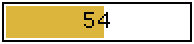

The chapter gives an overview about some basic terms and concepts used in the APOXI-GUI-framework.
Two main parts of the APOXI-GUI-framework are the classes Application and Window. APOXI windows have the same features as windows known from modern operating systems on desktop personal computers:
An application may contain a variable number of windows. The drawing of the window and its content is done on a so called device-context. A device-context is implemented by the class DeviceContext and represents an abstract drawing area, with defined colors for pens and brushes, text-attributes and raster-operations.
It's very important to be aware that a window always belongs to one application and may not be accessed in a direct manner from other applications. This is because each application might run in its own thread. As a thumb rule:
Every graphical object is derived from the class Component, which represents a graphical object with a rectangle as boundaries. Every component is able to handle and route messages. There are two groups of components: drawable objects and controls.
Drawable objects are represented by the class DrawableObject, which is the base for all graphical objects, which do not interact with the user. The classes ImageBox, ProgressBar and TextBox are examples for drawable objects:
|  | ||
| ImageBox | ProgressBar | TextBox |
Controls are represented by the class Control and can have one or more child-components which are layouted inside the control. Messages sent to a control are handled by the parent-control first and then forwarded to potential child-components. Controls can get the focus and hence interact with the user, as all key-messages are forwarded to the focused control. The classes CheckBoxControl, LineEditor and PushButton are examples for controls:
|
|
|
| CheckBox | LineEditor | PushButton |